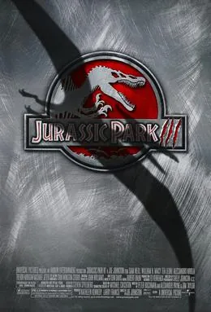

The genetics
Genetics is the background rather than the subject of this sequel. The dinosaurs on Isla Sorna were created by InGen using the franchise's premise of cloning dinosaurs from DNA preserved in blood-filled mosquitoes trapped in amber, filling the gaps with frog DNA. No geneticist appears on screen; the film's scientist is a palaeontologist who distrusts the whole project. In an early scene Grant tells his students that real scientists make real discoveries in the rocks, and that what John Hammond and InGen created were "genetically engineered theme park monsters, nothing more and nothing less". Consistent with research at the time, the film's Velociraptors were given feather-like quills. Cloning dinosaurs is not possible: claims of recovering dinosaur DNA were later attributed to contamination, and the oldest DNA ever recovered is about two million years old, far younger than the dinosaurs.
How genetics is portrayed
- Overall portrayal of genetics
- negative Genetic engineering is the backdrop of an island of deadly monsters, and the hero explicitly contrasts it with 'real science' in the rocks and calls it playing God.
- Outcome of the genetic intervention
- negative The engineered dinosaurs kill the pilot, mercenaries and Ben, and hunt the survivors across the island.
- InGen
- villain Aim: commercial (negative). Off-screen corporate creator of the engineered dinosaurs on Isla Sorna, possibly including the unlisted Spinosaurus; Grant dismisses its creations as 'genetically engineered theme park monsters' and calls its lab 'how you play God'.
- Billy Brennan
- ambivalent Aim: commercial, curiosity (mixed). Grant's assistant steals Velociraptor eggs to sell them to fund the dig, which sets the raptor pack on the group; Grant tells him he is 'no better than the people who built this place', but he redeems himself saving Eric.
The story
Palaeontologist Alan Grant is struggling to fund his research on the intelligence of Velociraptors when Paul and Amanda Kirby, apparently a wealthy couple, offer him money in exchange for guiding an aerial tour of Isla Sorna, the island where the company InGen bred its dinosaurs. Once there, the Kirbys force the plane to land; they are in fact a divorced couple searching for their son Eric, who went missing near the island while parasailing. After a Spinosaurus destroys their plane, the group crosses the island, chased by the Spinosaurus, by Pteranodons in a giant aviary and by a pack of Velociraptors. The raptors are pursuing them because Grant's assistant Billy has stolen two of their eggs, hoping to sell them to fund the excavation. They find Eric alive, return the eggs to the raptors, and are finally rescued by the US Navy and Marines, summoned by Grant's former colleague Ellie Sattler.